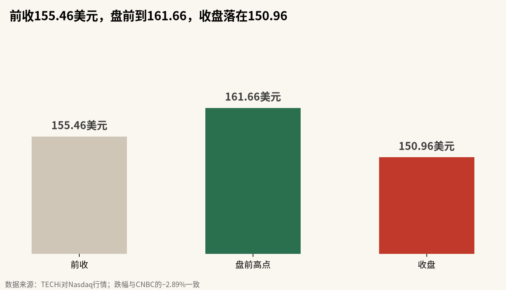
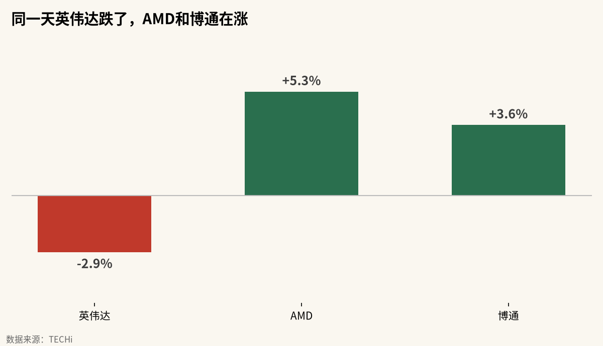

人口头说可以回来，董事会说不考虑：阿克曼公开写，英伟达董事没对股东负责
黄仁勋在财报前表示，若董事会认为符合股东和员工利益，他愿意回来；董事长哈维·琼斯在电话会上说，不打算请他重新担任 CEO。第二天，比尔·阿克曼在 X 上指责董事会未履行信义义务。同一天，英伟达收盘跌 2.89%。
黄仁勋说，如果董事会认为这对股东、员工、公司和美国有利，他愿意回来。这是他离职后、在业绩公布前的第一份公开声明。
董事长哈维·琼斯在财报电话会上的回答，是另一句：不打算请他重新担任CEO。中文媒体转述里，新任董事长还说，董事会目前未考虑让他重返这个位子。临时CEO是柯蕾特·克雷斯。
第二天，比尔·阿克曼在X上公开写：他认为英伟达董事会的行为，既不符合股东最佳利益，也不符合董事的信义义务。同一天，英伟达收在150.96美元，较前收155.46美元跌2.89%。
成绩单本身是超预期的。市场当天仍把股价收到盘前下方，说明治理和接班的不确定性还没有被这份成绩单消掉。
先把几个词说清楚
信义义务，是董事对公司和股东应尽的责任，核心是办事要为公司利益着想，不能只顾自己或其他压力。阿克曼还用到注意义务，指做决定前要把该查的事实查清楚。
临时CEO，是正式人选确定前先主持日常经营的人。英伟达现在由克雷斯担任。
盘前，是常规交易开盘之前的议价时段，成交较薄，价格波动可以很大。收盘价才是常规交易日结束时的正式价格。
稀释股本，是把可能转成普通股的证券也算进去之后的股份数。用它乘以股价，得到的是一种市值估算，不是交易所的官方市值公告。
前瞻指引，是公司对下一季营收或利润的自己预测。它可以高于或低于外部分析师的预期。
营收和指引都高于预期
2027财年第三季度营收1158.4亿美元，比LSEG预期的1091亿美元高出60多亿；第四季度指引1300亿美元，高于预期的1251亿美元。克雷斯还把2028财年收入增速预期从70%上调到约75%。公司展望不假设任何来自中国的数据中心计算营收。克雷斯在CNBC《Mad Money》上说，超大规模客户仍在要算力，客户构成没有他所说的那种变化。
这些数字说明需求还在，成绩单本身并不差。那为什么收盘还是跌了？它们解释不了收盘为什么落在盘前下方。
阿克曼公开写了什么
我把黄仁勋和琼斯的两句话对着读，对不上。阿克曼把这个缝写到了明处。
他在X上的原句是：他认为英伟达董事会的行为，既不符合股东最佳利益，也不符合董事的信义义务。这条帖子后来被《纽约邮报》引述得更完整。他写，这看起来像一连串重大治理失败，董事因媒体头条而恐慌，「他们很可能是因为害怕在媒体上难看，才觉得必须做点什么，而不是因为这对公司是对的。」「他们受不了这份热度。以这家公司的体量和它对这个国家、对整个世界的重要性，董事会在这个历史时刻的所作所为令人震惊。」
他还问：为什么在事实尚未完全清楚时，就排除黄仁勋回来的可能？「这又是一次对注意义务的违反。」并称董事会「根据媒体上的文章匆忙下了判断」。
邮报还写，网上请愿已有20万个签名。Kalshi也说请愿超过20万。⚠️ 签名数来自新闻和预测市场账号转述，未与请愿页面逐一核对。
另有一条更早的人选传闻。StockMKTNewz援引彭博称，董事会已接触Arm首席执行官Rene Haas，作为下任CEO人选之一。⚠️ 这是单一转述，不是公司确认。
算一笔账：盘前涨出来的，收盘又还了回去
下面算一笔账，把盘前涨出来的那一截，和收盘又还了回去的那一截对上。价格用的是TECHi对Nasdaq行情的记录，跌幅和CNBC的−2.89%对得上；市值变化按24.2亿稀释股本估算，不是交易所官方公告。
第一步，前收155.46美元。
第二步，盘前一度最高约161.66美元，时间在美东早上5点06分，较前收高4.0%。
第三步，常规交易收在150.96美元，较前收跌2.89%。不要把+4.0%和−2.89%直接相加。从盘前高点到收盘，应该用150.96除以161.66再减1，大约是−6.6%。算完这一截，我愣了一下。盘前那截涨幅，收盘时不仅还回去了，还多吐了一截。
第四步，看市值。前收和收盘相差4.5美元，24.2亿股乘以4.5美元，大约是1090亿美元。也就是说，按这个口径，收盘市值比前收大约少了1090亿美元。TECHi还写过，美东6点39分的159.89美元，曾比前收市值大约多1070亿美元。一来一回，都是估算。
第五步，把盘中路径补上，避免只看三个点。常规交易开盘约158.94美元，较前收高2.2%；盘中高到159.70美元，上午9点42分前已跌破前收，最低约150.40美元，收在150.96美元，为2025年6月以来最低收盘。成交约3.39亿股。CNBC说，过去一周跌逾13%。路透说，较10月6日历史收盘高点累计跌约36%。
| 时点 | 价格 |
|---|---|
| 前收 | 155.46美元 |
| 盘前高点 | 约161.66美元 |
| 收盘 | 150.96美元 |
我不打算在2.89%和2.9%这个小数上较劲。这个没什么好纠结的。CNBC写的是跌2.89%，TECHi四舍五入写成2.9%，用的是同一对收盘价。
三个价位示意：前收、盘前高点、收盘

从盘前高点到收盘大约低了6.6%，比相对前收的2.89%更刺眼。成绩单公布后先被买起来的那一截，没能在常规交易里站住。
同日对照：不是所有芯片股都在跌
同一天芯片股都在跌吗？不是。

AMD涨5.3%，博通涨3.6%。全面的科技股下跌，解释不了这一天的价差。成绩单超预期的公司，股价仍然收在盘前下方，更说明市场在给治理和接班单独标一个价。
成绩单超了预期，收盘却落在盘前下方
成绩单超了预期，收盘却落在盘前下方。治理和接班，仍是定价的一部分。
后面的风险，不只是下一次财报数字对不对得上。调查和国会安排还在日程上：商务部周一调整了规则，限制中国公司远程使用海外数据中心算力；众议院能源与商务委员会要求商务部长卢特尼克出席，并请克雷斯在12月2日前简报；黄仁勋将在12月出席国会相关安排。接班人选传闻也会继续扰动，但在公司自己确认之前，都还只是传闻。
能改这个判断的信号很具体：官方会不会改变「不请回」的表述，正式CEO何时任命，以及下一份可以交易的财报或指引怎么写。
这对持有英伟达的人意味着什么
超预期的成绩单，没有自动消掉治理和接班的不确定性。
如果看重的是需求还在不在，营收和指引仍然是目前最硬的数字。如果看重的是谁来当CEO、董事会和创始人能不能说上同一句话，那就要把琼斯的表态、阿克曼的质问，和当天从盘前高点落到收盘的那一截，放在一起看。
同一天AMD和博通是上涨的，不能把英伟达的收盘下跌直接写成整个芯片板块在崩。按24.2亿稀释股本估算，收盘市值比前收少了大约1090亿美元，这是估算，不是交易所公告。网上请愿的签名数、董事会接触Arm首席执行官的传闻，都还没有跟原始页面或公司确认核对，不够拿来做决定。
几点说明
盘前高点约161.66美元、收盘150.96美元、前收155.46美元来自TECHi对Nasdaq行情的记录，跌幅与CNBC的2.89%一致；TECHi正文里也写成跌2.9%，是四舍五入。从盘前高点到收盘约−6.6%，由150.96除以161.66再减1得到，不是把+4.0%和−2.89%相加。约1090亿美元按24.2亿稀释股本乘以4.5美元估算，约1070亿美元是TECHi对6点39分那一档的估算，都不是交易所官方市值公告。「算一笔账」里的路径是真实报价，市值差额是估算。请愿20万签名、接触Rene Haas，均为转述，未与原始页面或公司确认核对。目标价传闻未采用。
免责声明：本文内容仅供信息分享，股价与市值变化为公开行情及据此估算，不构成任何投资建议。
X 上怎么看
结论 · 董事会「目前不考虑请回」来自中文媒体对电话会的报道；阿克曼的长帖是公开问责，不是新的公司决定。接触ARM首席执行官、部分董事仍想请回、请愿人数等，仍是转发或单一来源。
▲ 看多2 位
▼ 看空5 位
观点为 X 用户当日公开帖子的中文摘要，忠于原文但有删减；标「未核实」的为预测、个人推测或单一来源说法。立场为人工判断。
数据来源
- 第三季度营收1158.4亿美元、LSEG预期1091亿美元、第四季度指引1300亿美元对预期1251亿美元、董事长琼斯称不打算请黄仁勋重新担任CEO、黄仁勋在业绩公布前表示愿意回来、临时CEO为克雷斯、展望不假设中国数据中心计算营收、克雷斯在《Mad Money》上的表态、过去一周跌逾13%，以及商务部规则调整、国会简报和出席安排，来自CNBC的财报与股价报道。
- 2028财年收入增速预期从70%上调到约75%，中文华尔街日报转述和路透均有提到，正文按可核对的口径使用。黄仁勋中文名按常用写法，不用该帖里的「黄仁」。
- 11月18日收盘150.96美元、前收155.46美元、盘前高点约161.66美元、开盘约158.94美元、盘中高159.70美元、最低约150.40美元、成交约3.39亿股、按24.2亿稀释股本估算的市值变化，以及同一天AMD涨5.3%、博通涨3.6%，来自TECHi对Nasdaq行情的记录。收盘跌幅与CNBC的2.89%一致，TECHi写成2.9%是四舍五入。较10月6日高点累计跌约36%，来自路透，经CNBC/TECHi报道转述使用。
- 阿克曼帖子开头原句以X原文为准；后半段完整表述以《纽约邮报》引述为准，时间线返回的原文曾被截断。请愿约20万个签名由邮报和Kalshi转述，未与请愿页面逐一核对。
- 董事会接触Arm首席执行官Rene Haas，来自StockMKTNewz援引彭博的单一转述，不是公司确认。
- 从盘前高点到收盘约−6.6%、约1090亿美元市值变化，是按公开价格和TECHi所用稀释股本做的算术/估算，不是交易所官方市值公告。
- https://www.cnbc.com/2026/11/18/nvidia-stock-earnings.html
- https://www.techi.com/nvidia-stock-falls-day-after-earnings-ten-report-record/
- https://nypost.com/2026/11/18/business/bill-ackman-rips-nvidias-board-over-jensen-huangs-ouster-rushed-to-judgment/
- https://x.com/BillAckman/status/2123101979375235386
- https://x.com/ChineseWSJ/status/2122895089340997818
- https://x.com/Kalshi/status/2123111458108215670
- https://x.com/StockMKTNewz/status/2123131406935085295